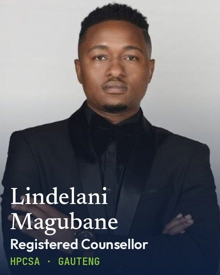
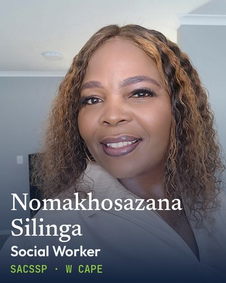

Netstar is very good at the part everyone can see. The control room answers, the recovery team moves, the vehicle comes home. On the night, that is the only thing that matters, and you do it better than almost anyone.
What nobody in this industry owns is the week afterwards. She does not sleep. She checks the locks four times. She will not drive at night, and she cannot explain to her children why she snapped at them on Saturday. Her husband tells people she was lucky. She knows she was, and it does not help.
Six weeks later she is still not right, and by then nobody connects it to the hijacking at all.
Everything else here is detail about how we would do it properly, and who would be on the other end of the line. We cannot undo what happened to her. We can sit with her in the days when it is loudest, notice early if it is becoming something worse, and make sure she knows she is not losing her mind. That is usually enough. When it is not, we get her to someone who can do more.
We work on WhatsApp, on purpose. Nobody downloads an app at eleven at night. The message arrives where she already talks to her sister, from a person, and she can answer in her own time. People who cannot yet say it out loud will very often type it.
Illustrative, but this is the tone and the pace. Real conversations stay between the person and the counsellor. Netstar would never see them.
The same follows a serious accident, a home invasion, or a theft that leaves someone frightened in their own driveway. Cover reaches everyone who was in the car and the household, not only the name on the account.
Not a call centre and not a chatbot. Counsellors, social workers and psychologists, registered with the HPCSA and SACSSP, working across all nine provinces in the languages people actually want to cry in.


Whoever answers at two in the morning is as qualified as whoever answers at ten. We have been doing this for nine years. The largest single part of our work is mental health support for the armed response industry, and we already run this kind of outreach for some of the country's larger insurers.
We will not phone anyone until you tell us it is safe to. Your control room decides when the danger has passed. Safety, medical care and the police come first, every time, and we do not go near a person before you say so.
You will never see what she said. You would receive whether contact was made and whether the case closed. Not the conversation. We would not have anything worth having if people thought otherwise, and neither would you.
We take only a name, a number, the type of incident and roughly where it happened. No tracking history and no telemetry ever comes to us. Everything is held in South Africa under POPIA.
Your controller heard all of it. The shouting, the silence afterwards, whether she was still breathing. Then the call ended and she took the next one, and she will never find out how it turned out.
Recovery officers arrive at scenes with weapons and injuries. None of them will put their hand up and ask for help, because in that job you do not. It comes out instead as sick days, as short tempers, as good people quietly resigning after eleven years.
None of that is a guess. Supporting the armed response industry is the biggest thing we do — the officers who go through the door first, and the controllers who send them. Your people do a version of the same job, and we already know how it lands.
We would cover them too, on the same terms and with the same confidentiality: debriefing after the shifts that deserve it, group sessions built into the roster, and a number their families can use. Nothing said reaches HR. You would see only whether a team is carrying too much.
It is the part we feel most strongly about, and the part you could start tomorrow without touching a single client record.
A competitor can match your hardware, your coverage and your price. None of them can match the phone call. It also lands at the moment someone decides whether to renew, and it holds on to controllers who cost a fortune to replace. We will make that case properly when we meet, but it is not why we are proposing it.
Start small. One group of clients, one control room shift, six to eight weeks. Your control room refers by hand, so nothing has to be built. At the end you will know what people actually do when someone calls them, and we can talk about price against real numbers.
We would like ninety minutes to agree what we call about, and who we start with.